Linux 中 core dump 异常的分析
[toc]
一、概述
在 UNIX 系统中，常将“主内存称为核心（core），因为在使用半导体作为内存材料之前，便是使用核心（core）。而核心映像（core image）就是 “进程”（process）执行当时的内存内容。当进程发生错误或收到 “信号”（signal）而终止执行时，系统会将核心映像写入一个文件，以作为调试之用，这就是所谓的核心转储（core dump）。
Core dump 是指在程序异常终止时，操作系统将程序的内存映像保存到磁盘上的一种机制。
在 Linux 系统中，core dump 提供了一种调试程序错误的重要方式，它记录了程序在崩溃时的内存状态，可以帮助开发人员快速定位问题。当程序因为某种原因（如段错误、非法指令等）异常终止时，Linux 系统会尝试将程序在内存中的映像、程序计数器、寄存器状态等信息写入到一个名为 core 的文件中，这个文件就是所谓的 core dump。
以下是一些常见的导致 core dump 的错误：
- 段错误（Segmentation fault）
- 程序访问了无效的内存地址，比如试图访问未分配的内存或者已经释放的内存
- 空指针引用（Null pointer dereference）
- 程序试图使用空指针访问内存中的数据时，会导致空指针引用错误
- 内存访问越界（Out of bounds memory access）
- 程序试图访问数组或者其他数据结构超出其边界范围的内存，就会发生内存访问越界错误
- 使用已释放的内存（Use after free）
- 程序试图在已经释放的内存地址上进行读取或写入操作时，就会发生使用已释放的内存错误
- 栈溢出（Stack overflow）
- 程序递归调用层数过深或者在栈上分配了过多的内存时，会导致栈溢出错误
- 除以零（Division by zero）
- 无效的指令或操作码（Invalid instruction or opcode）
- 执行了不存在或无效的机器指令或操作码，会导致无效指令错误
- 硬件故障或操作系统错误：如内存损坏、内核崩溃等情况
二、发生 core dump 的原因
在 Linux 中，发生 core dump 是因为程序发生了严重错误，导致程序被强制终止。当程序遇到一个无法处理的错误时，操作系统为了进行调试和分析，会将程序的内存空间中的所有数据，包括堆栈和堆的内容等，以一种特殊的文件格式保存到一个称为 core dump 的文件中。
当程序发生 core dump 时，可以使用调试工具（如 gdb）来分析 core dump 文件，找出导致程序崩溃的具体原因。调试工具可以提供堆栈跟踪、变量值查看等功能，帮助我们定位和解决问题。
1. 空指针或非法指针
空指针或非法指针（野指针、悬空指针）引起 core dump 是一种最常见的核心转储，大致可以有 3 种原因导致程序出现异常：
- 对空指针进行解引用等操作；
- 声明指针变量后未进行初始化，并直接进行操作，极大概率引发
core dump，此类未经初始化的指针，统称野指针； - 对某个指针，调用了 free 函数或者 delet 函数，该指针指向的空间已经被释放，但未将该指针重新指向 NULL，此类指针成为悬空指针。对悬空指针再次操作，也会引发
core dump。
2. 数组越界或指针越界
- 数组越界：当程序访问数组中超出其有效索引范围的元素时，会发生数组越界错误。例如，如果一个数组有 5 个元素，但程序尝试访问第 6 个元素，就会导致越界错误。
- 指针越界：当程序使用指针来访问无效的内存地址时，会发生指针越界错误。例如，如果一个指针指向了一个已经释放或未分配的内存区域，或者指针超出了其有效范围，就会导致指针越界错误。
3. 数据竞争
数据竞争是指多个线程同时访问共享的数据，并且至少一个线程试图对该数据进行写操作。当发生数据竞争时，由于缺乏同步机制，可能会导致未定义行为，其中包括 core dump。
数据竞争可能导致以下问题之一：
- 无效的内存访问：并发写入共享数据时，可能会导致内存损坏或非法内存访问，从而导致
core dump。 - 竞争条件：当多个线程操作共享数据而没有正确的同步时，可能会导致竞争条件的出现。例如，线程 A 读取共享数据，线程 B 写入共享数据，并且线程 A 使用了未正确同步的数据，从而导致
core dump。 - 死锁：当多个线程同时请求锁资源，并且循环等待对方释放锁资源时，就会发生死锁。这可能导致线程无法继续执行，最终导致
core dump。
三、分析 core dump 的方法
1. 启用 core dump
默认情况下，程序运行崩溃导致 core dump，是不会生成 core 文件的，因为系统的 RLIMIT_CORE（核心文件大小）资源限制，默认情况下设置为 0。
先查看系統默认：ulimit -c 命令用于显示当前用户的 core dump 文件的大小限制。输出结果的含义如下：
- 数字（以 KB 为单位），表示当前用户允许生成的
core dump文件的最大大小限制 - unlimited，表示当前用户允许生成任意大小的
core dump文件 - 0，表示当前用户不允许生成
core dump文件
通过以下命令可在用户进程触发信号时启用 core dump 生成，并使用合理的名称将核心文件位置设置为 /tmp/。==请注意，这些设置不会永久存储，重启或者重新登录就会失效==。
1 | $ ulimit -c unlimited |
使 core 文件名称是否带有 pid，配置文件 /proc/sys/kernel/core_uses_pid 的内容为 1，添加 pid；0为不添加 pid；
下面是 /tmp/core-%e-%s-%u-%g-%p-%t 的各个参数的含义：
• %e：导致 core dump 的程序的可执行文件名。
• %s：导致 core dump 的信号编号。
• %u：导致 core dump 的程序的实际用户 ID。
• %g：导致 core dump 的程序的实际组 ID。
• %p：导致 core dump 的程序的进程 ID。
• %t：core dump 发生时的时间戳（自 epoch 时间以来的秒数）。
因此，/tmp/core-%e-%s-%u-%g-%p-%t 会生成包含如下信息的 core 文件：
1 | /tmp/core-<executable>-<signal>-<uid>-<gid>-<pid>-<timestamp> |
要想永久开启 core dump 功能，需要修改配置文件 /etc/security/limits.conf，修改如下：
1 | $ more /etc/security/limits.conf |
登出重新连接即可生效
通过如下命令可以查看详细显示信息：
1 | $ ulimit -a |
2. 触发 core dump
下面使用两个简单的 C 程序作为示例。
2.1 因空指针解引用而崩溃
文件名为 test.c：
1 |
|
编译并运行程序：
1 | $ gcc -g -o test test.c |
运行程序后，会在 /tmp/ 文件夹下生成一个 core 文件。
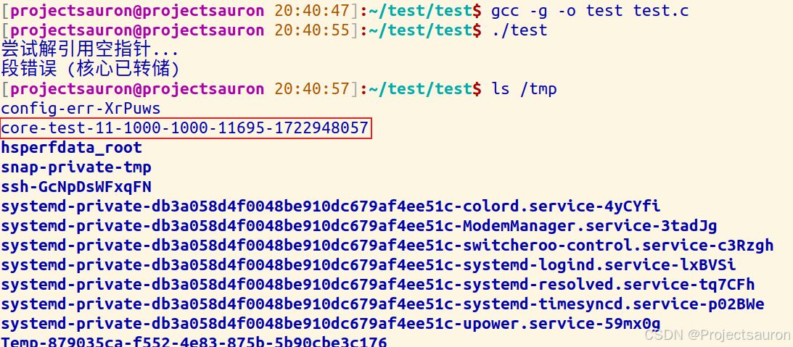
2.2 通过 信号触发 core dump
core dump 文件一般是在收到某个信号的时候结束产生，如果不指定特定的信号，应用程序按默认方式处理，默认处理的信号如下：
1 | 3) SIGQUIT 4) SIGILL 5) SIGTRAP 6) SIGABRT 7) SIGBUS |
此例通过 SIGSEGV 信号触发 core dump，文件名为 test2.c：
1 |
|
编译并运行程序：
1 | $ gcc -g -o test2 test2.c |
然后再打开一个终端，杀死这段进程：
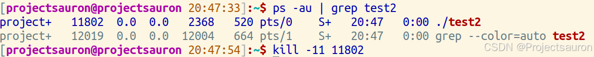
这是，就会在 /tmp/ 文件夹下生成一个 core 文件。
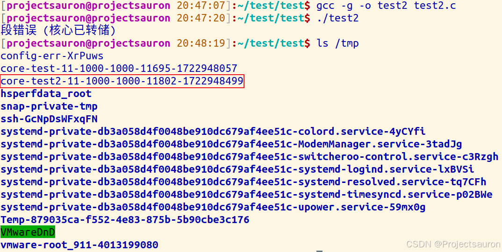
3. 利用 gdb 分析 core dump
两个例子都是段错误导致的 core dump，所以用 gdb 调试的方法也是一样的，命令格式如下：
1 | gdb <program_name> <core_dump_file> |
比如先调试第一个例子的 core 文件，则输入如下命令：
1 | $ gdb test /tmp/core-test-11-1000-1000-11695-1722948057 |
可以看到 gdb 提示在代码的第 8 行出错了：
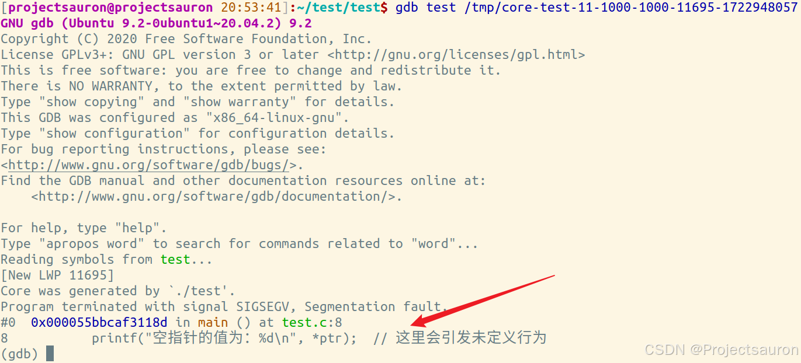如果函数关系调用关系很复杂，可以用 bt 命令（backtrace）查看调用堆栈（where 命令也有同样功能），如下图可知是在调用 main 函数时产生的段错误，可用 list 命令查看，具体就是 list 加函数名，如下图。然后通过 p(print) 命令，打印出 ptr 的值，可以发现 ptr 指针是一个空指针：
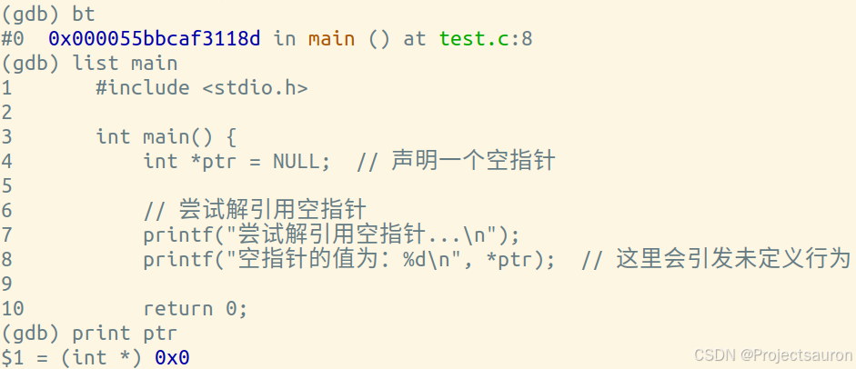
或者可以通过查看汇编代码来排查问题：
通过 disass 命令可以打印出出现错误的代码段：
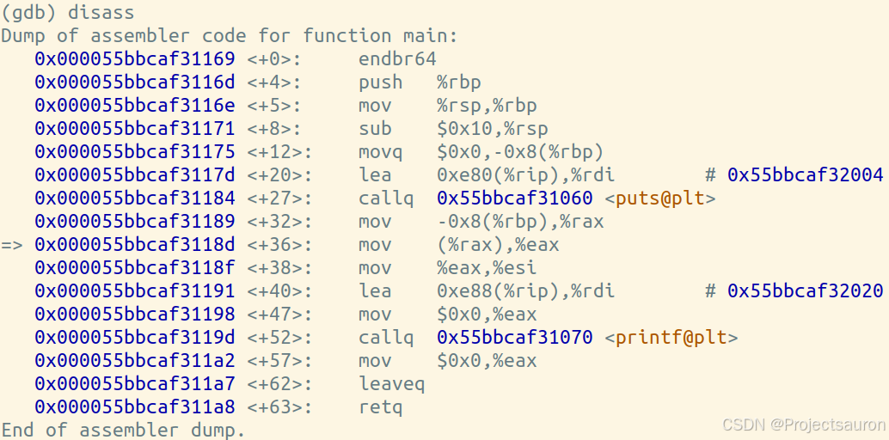
再通过 info reg (info registers) 查看各个寄存器的值：
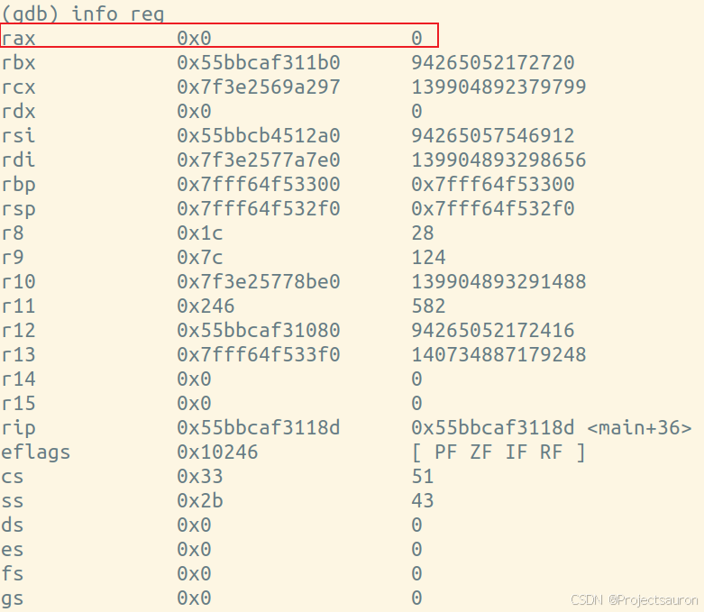
可以看到寄存器 rax 的地址为 0，说明这个指针 ptr 是个空指针。
第二个例子，也是同样用 gdb 打开 core 文件：
1 | gdb test2 /tmp/core-test2-11-1000-1000-11802-1722948499 |
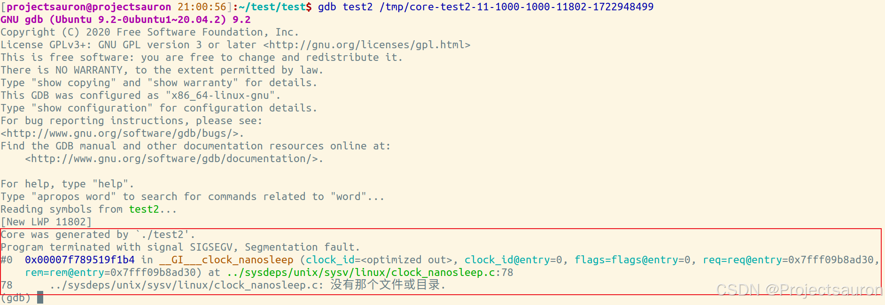虽然这个段错误是因为我们人为地发送了 SIGSEGV 信号，导致了程序地段错误，而在打开 core 文件后，可以看出在执行 __GI___clock_nanosleep 函数时，遇到了段错误。
通常情况下，分析
core dump问题，除了 core 文件之外，还会结合程序的 log 信息和系统的 log 信息（包括kernel log、systemd log等）一起分析。
如果我们不事先知道是由 SIGSEGV 信号导致段错误的，首先要用 bt 命令找到函数的调用关系链：
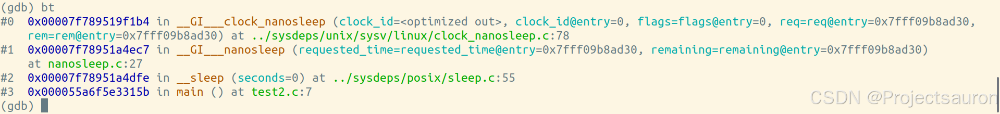
前面三个函数是封装过的库函数，所以没办法看见具体实现：
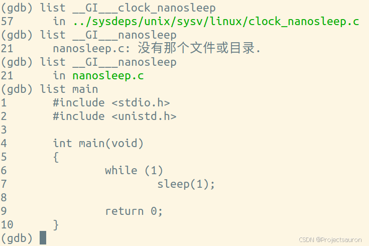在前面输入 bt 命令查看堆栈情况时，有出现了两个变量，分别是 req 和 rem。这个两个变量是 nanosleep 函数的形参，原型是 int nanosleep(const struct timespec *req, struct timespec *rem)。
用 print 命令打印出两个变量的地址：
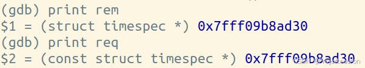
再使用 info registers 命令查看寄存器状态，检查程序在崩溃时的上下文：
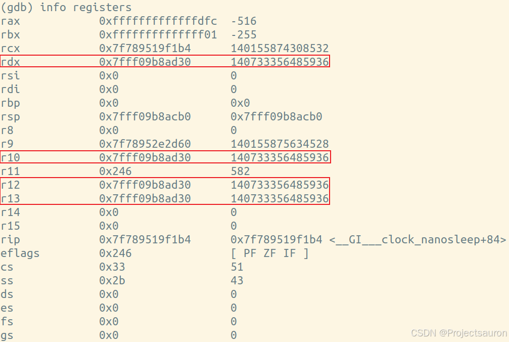
从寄存器状态来看，没有明显的错误迹象，函数的栈帧空间没什么问题，形参的位置和值也没什么问题，所有值看起来都在正常范围内。
当下是没办法直接了当的判断为人为干预造成 core dump，如果此时想到了信号会引发段错误，可以用 info signals 命令查看信号情况：
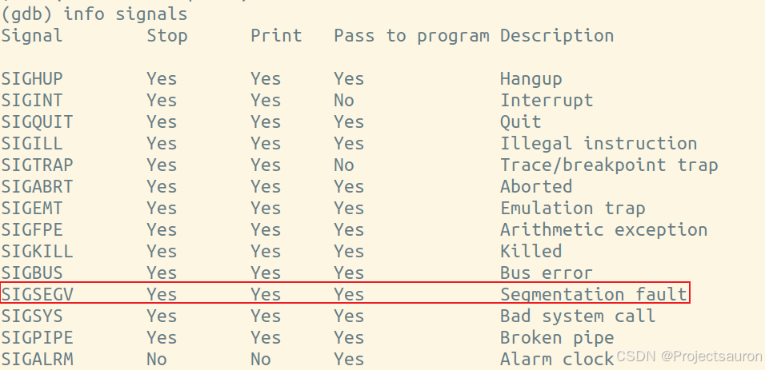
从 info signals 的输出中可以看出，SIGSEGV（Segmentation fault）信号是设置为在程序接收到该信号时停止执行并打印信息的。也就说，可以人为地使用 kill -11 发送了 SIGSEGV 信号来终止程序并生成 core dump。